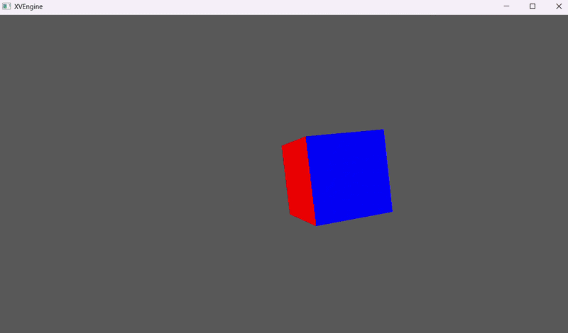

XVEngine

Overview
A real-time Vulkan 1.4 engine built from scratch in C++20. A on going project to learn more about modern graphics programming, and game engine architecture.
Currently in early stages, i am using an incremental development aproach, where i try to implement a new feature at a time. This project started after completing Krhonos vulkan tutorial and i started to think about abstraction, and a more modular aproach to a engine.
The last update included the implementation of a pipeline selection based on material properties, in order to be able to render masked textures and additive. The next steps are going to be shadow maps, pbr materials and SSBO.
Gallery




Links